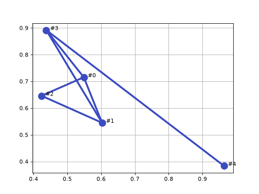

Introduction
This pure-Python package provides classes for directed and undirected graphs: vertices connected by edges, with edge costs and path planning. Self-loops and parallel edges are permitted.
Vertices can optionally be embedded: given a coordinate in a space of any
dimension. Edge costs are then computed from the vertex positions using a
distance metric (Euclidean, Manhattan, SE(2), or your own), the vertex nearest
a point can be found, A* uses the metric as its heuristic, and the graph can
be plotted, or exported with its layout preserved.
What is a graph?
A graph is an abstract representation of a set of objects connected by links and depicted visually as shown below. Graphs can be used to represent transport, communications or social networks, and this branch of mathematics is graph theory.
(Source code, png, hires.png, pdf)



Mathematically, a graph is denoted by \(G(V, E)\) where \(V\) are the vertices or nodes, and \(E\) are the links that connect pairs of vertices and are called edges or arcs. Edges can be directed (shown as arrows, as in the graph on the right) or undirected (shown as line segments, as in the graph on the left). Edges can have an associated weight or cost associated with moving from one vertex to another. A sequence of edges from one vertex to another is a path, and a sequence that starts and ends at the same vertex is a cycle. An edge from a vertex to itself is a loop, and edges that join the same pair of vertices are parallel edges: B and D on the left are joined by two edges, as are A and B on the right. On the right, B and C are also joined by edges in opposite directions.
Creating a graph using the pgraph package
To create a new graph using the pgraph package, we first import the package and create
a new instance of the UGraph class, which represents an undirected graph with vertices that exist in 2-dimensional space.
Next, we add some vertices to the graph, each with a random 2D coordinate which is specified as a 2-element array. The coordinates can be used to compute the cost of edges, and to plot the graph.
>>> np.random.seed(0) # ensure repeatable results
>>> for i in range(5):
... g.add_vertex(np.random.rand(2))
Vertex[#0, coord=(0.5488, 0.7152)]
Vertex[#1, coord=(0.6028, 0.5449)]
Vertex[#2, coord=(0.4237, 0.6459)]
Vertex[#3, coord=(0.4376, 0.8918)]
Vertex[#4, coord=(0.9637, 0.3834)]
The method add_vertex returns a reference to the newly created vertex object, and
a vertex can also be obtained by indexing the graph object. For example vertex 1 is
>>> g[1]
Vertex[#1, coord=(0.6028, 0.5449)]
and is an instance of Vertex; it has the coordinate
\((0.6028, 0.5449)\) and has been assigned a default name "#1" but we could specify
an explicit name to add_vertex.
We can also reference a vertex by its name
>>> g["#1"]
Vertex[#1, coord=(0.6028, 0.5449)]
A summary of the graph can be displayed
>>> print(g)
UGraph: 5 vertices, 0 edges, 5 components
and we see that it has 5 vertices, no edges and 5 components, that is, each vertex is isolated.
Next, we add edges to connect specific pairs of vertices
>>> g.add_edge(g[0], g[1]) Edge{[#0] -- [#1], cost=0.1786} >>> g.add_edge(g[0], g[2]) Edge{[#0] -- [#2], cost=0.1431} >>> g.add_edge(g[0], g[3]) Edge{[#0] -- [#3], cost=0.2087} >>> g.add_edge(g[1], g[2]) Edge{[#1] -- [#2], cost=0.2056} >>> g.add_edge(g[1], g[3]) Edge{[#1] -- [#3], cost=0.3842} >>> g.add_edge(g[3], g[4]) Edge{[#3] -- [#4], cost=0.7315}
The add_edge method returns a reference to the edge object just created. By
default, the edge cost is the Euclidean distance between the vertices, but this can
be overridden by a third argument to add_edge.
A summary of the graph can be displayed
>>> print(g) UGraph: 5 vertices, 6 edges, 1 component
and we see that it has 5 vertices, six edges and one component, that is, all the vertices are connected into one network.
The graph can be plotted by
>>> g.plot()
(Source code, png, hires.png, pdf)


The vertices are shown as blue circles, and the edges are shown as lines joining vertices. Many options exist to change default plotting behavior. Note that only graphs embedded in 2- and 3-dimensional space can be plotted.
The vertices adjacent to vertex 1 are
>>> g[1].adjacent() [Vertex[#0, coord=(0.5488, 0.7152)], Vertex[#2, coord=(0.4237, 0.6459)], Vertex[#3, coord=(0.4376, 0.8918)]]
which is a list of adjacent vertex objects, those connected to it by an edge. Each edge is an object and the edges connecting to vertex 1 are
>>> g[1].edges() [Edge{[#0] -- [#1], cost=0.1786}, Edge{[#1] -- [#2], cost=0.2056}, Edge{[#1] -- [#3], cost=0.3842}]
and each edge has references to the vertices it connects
>>> g[1].edges()[0].endpoints [Vertex[#0, coord=(0.5488, 0.7152)], Vertex[#1, coord=(0.6028, 0.5449)]]
The cost or length of an edge is
>>> g[1].edges()[0].cost 0.1786470956951876
The vertex closest to the coordinate \((0.5, 0.5)\) is
>>> g.closest((0.5, 0.5)) (Vertex[#1, coord=(0.6028, 0.5449)], 0.11213746732281339)
The minimum-distance path between any two vertices in the graph can be computed using well-known algorithms such as A* (Hart et al. 1968)
>>> path, length, _ = g.path_Astar(g[2], g[4]) >>> path [Vertex[#2, coord=(0.4237, 0.6459)], Vertex[#0, coord=(0.5488, 0.7152)], Vertex[#3, coord=(0.4376, 0.8918)], Vertex[#4, coord=(0.9637, 0.3834)]]
which is a list of vertices representing a total path length of
>>> length 1.0832988437645112
Graphs can also be represented in other ways, such as adjacency, incidence, degree and Laplacian matrices, and methods exist to convert the graph to these.
Arbitrary data can be attached to any vertex or edge by assigning values to attributes
>>> g[1].data = "this is vertex 1" >>> g[1].edges()[0].data = "this is the edge from vertex 0 to vertex 1"
This exploits the flexible nature of Python, but care must be taken to avoid name clashes with existing attributes.
A more robust and Pythonic approach is to create a subclass of the Vertex class and
pass them to the graph constructor. For example, we can create a subclass of Vertex called MyVertex and a subclass of Edge called MyEdge and then create a new graph using these classes.
>>> import pgraph
>>> import numpy as np
>>> class MyVertex(pgraph.Vertex):
... pass
>>> class MyEdge(pgraph.Edge):
... pass
>>> g = pgraph.UGraph(vertex_class=MyVertex, edge_class=MyEdge)
>>> np.random.seed(0) # ensure repeatable results
>>> for i in range(5):
... v = g.add_vertex(np.random.rand(2))
>>> g.add_edge(g[0], g[1])
MyEdge{[#0] -- [#1], cost=0.1786}
>>> g.add_edge(g[0], g[2])
MyEdge{[#0] -- [#2], cost=0.1431}
>>> g.add_edge(g[0], g[3])
MyEdge{[#0] -- [#3], cost=0.2087}
>>> g.add_edge(g[1], g[2])
MyEdge{[#1] -- [#2], cost=0.2056}
>>> g.add_edge(g[1], g[3])
MyEdge{[#1] -- [#3], cost=0.3842}
>>> g.add_edge(g[3], g[4])
MyEdge{[#3] -- [#4], cost=0.7315}
>>> print(g)
UGraph: 5 vertices, 6 edges, 1 component
we can see that the type of the vertices and edges is now the user-defined classes
Creating directed and undirected graphs
The example above illustrates an undirected graph, but a directed graph can be created by using
the DGraph class instead of UGraph. The methods are the same, but the edges are
directed and the path-finding algorithms take this into account.
Alternatively, we can make the decision at runtime by using the directed argument to the Graph constructor
History
pgaph-python is based on PGraph.m which is part of the
earlier Spatial Math Toolbox for MATLAB.